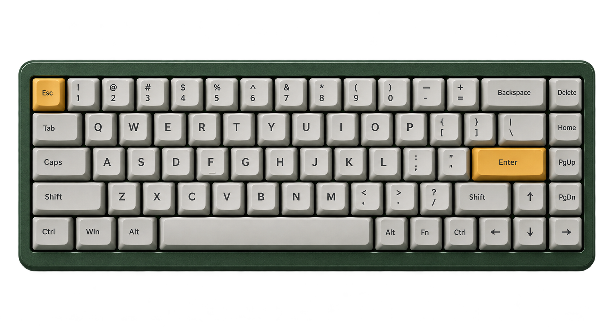
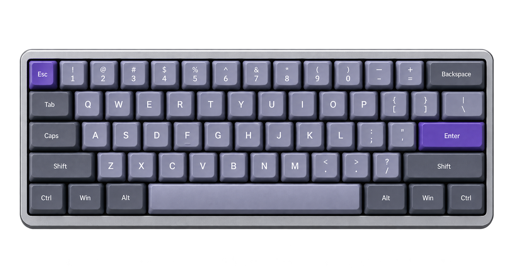

<!doctype html>
<html lang="th"><head><meta charset="utf-8"><style>
@font-face{font-family:noto;src:url('../../node_modules/@fontsource/noto-sans-thai/files/noto-sans-thai-thai-400-normal.woff2')}@font-face{font-family:noto;src:url('../../node_modules/@fontsource/noto-sans-thai/files/noto-sans-thai-thai-700-normal.woff2');font-weight:700}*{box-sizing:border-box}body{margin:0;background:#ddd;font-family:noto,'Segoe UI',sans-serif}.card{width:1080px;height:1440px;padding:72px;background:#f4f1e8;color:#111827;position:relative;overflow:hidden}.num{position:absolute;right:72px;top:72px;font-size:28px;color:#5f6b7a}.eyebrow{font-size:28px;font-weight:700;color:#2457ff;letter-spacing:.04em}.title{font-size:72px;line-height:1.12;margin:28px 0 24px;font-weight:700}.lead{font-size:42px;line-height:1.4;margin:0 0 42px}.panel{border:3px solid #111827;border-radius:28px;padding:36px;background:#fffdf7;box-shadow:12px 12px 0 #111827}.item{font-size:36px;line-height:1.45;margin:22px 0}.photo{height:430px;width:100%;object-fit:contain;display:block;filter:drop-shadow(0 18px 18px #0005)}.photo-pair{display:grid;grid-template-rows:1fr 1fr;height:560px;gap:12px}.photo-pair img{width:100%;height:100%;min-height:0;object-fit:contain;filter:drop-shadow(0 12px 10px #0006)}.photo-label{font-size:26px;font-weight:700;color:#2457ff}.note{font-size:28px;line-height:1.45;color:#5f6b7a}.footer{position:absolute;left:72px;right:72px;bottom:62px;border-top:2px solid #111827;padding-top:20px;font-size:27px;color:#5f6b7a}.cover{background:#111827;color:#f4f1e8}.cover .eyebrow{color:#8fb0ff}.cover .panel{background:#f4f1e8;color:#111827}.cover .title{font-size:88px;margin-top:42px}.signal{background:#2457ff;color:white;padding:18px 26px;font-size:38px;font-weight:700;display:inline-block;transform:rotate(-1deg)}table{width:100%;border-collapse:collapse;font-size:28px;background:#fffdf7}th,td{border:2px solid #111827;padding:14px;text-align:left}th{background:#111827;color:#fff}.choice{display:grid;grid-template-columns:1.5fr 1fr;gap:12px;font-size:32px;margin:14px 0}.choice span{padding:16px 20px;border:2px solid #111827}.choice span:last-child{background:#2457ff;color:#fff;font-weight:700;text-align:center}
</style></head><body><main id="app"></main><script>
const slides=[
['cover','TECH FIELD NOTE','Keyboard Layout<br>เลือกยังไง?','60% · 65% · 75% · TKL · 98% · 100%','ดูปุ่มที่เราใช้ ไม่ใช่แค่เปอร์เซ็นต์'],
['','FULL-SIZE / 100%','ปุ่มครบ แต่อาจใช้พื้นที่เกินงานของเรา','มี F-row, navigation, arrows และ numpad แยกชัด','เหมาะเมื่อป้อนตัวเลขต่อเนื่องหรือใช้ shortcut บน numpad'],
['','96% / 98% / 1800 COMPACT','ยังมี numpad แต่บีบพื้นที่และย้ายบางปุ่ม','เก็บปุ่มส่วนใหญ่ของ full-size','ก่อนซื้อ: ซูมดู Delete · Home · End · arrows · numpad'],
['','TKL / 80%','ตัด numpad แต่ยังเก็บปุ่มที่คุ้นมือ','ยังมี F-row, arrows และ navigation เป็นปุ่มแยก','เหมาะเมื่อแทบไม่ใช้ numpad แต่ไม่อยากจำ layer เพิ่ม'],
['','75%','เก็บ F-row + ลูกศร แล้วบีบ navigation','สั้นกว่า TKL แต่ spacing และ nav position อาจไม่คุ้นมือ','เหมาะเมื่อใช้ F-row บ่อย แต่แทบไม่ใช้ numpad'],
['','65% vs 60%','ปุ่มไม่อยู่บนหน้าแรก ≠ ฟังก์ชันหาย','65% มักเก็บลูกศร · 60% พึ่ง Fn/layer มากขึ้น','Layer คือชุดคำสั่งอีกชั้นที่เรียกผ่าน Fn หรือ keymap'],
['table','เทียบจากปุ่มที่กดตรง','เลือกจาก friction ที่ยอมรับได้','',''],
['choice','เลือกจาก Workflow ของเรา','ไม่มี layout ที่ดีที่สุดสำหรับทุกคน','','']];
const photos=['reference-tkl-v1.png','keyboard-fullsize-v2.png','keyboard-98-v2.png','reference-tkl-v1.png','reference-75-v1.png','keyboard-65-v2.png'];
function render(s,i){if(s[0]==='table')return `<section class="card"><b class="num">${i+1}/8</b><div class="eyebrow">${s[1]}</div><h1 class="title">${s[2]}</h1><table><tr><th>Layout</th><th>Numpad</th><th>F-row</th><th>Arrows</th></tr><tr><td>100%</td><td>✓</td><td>✓</td><td>✓</td></tr><tr><td>96/98%</td><td>✓</td><td>✓</td><td>✓</td></tr><tr><td>TKL</td><td>—</td><td>✓</td><td>✓</td></tr><tr><td>75%</td><td>—</td><td>✓</td><td>✓</td></tr><tr><td>65%</td><td>—</td><td>Fn</td><td>✓</td></tr><tr><td>60%</td><td>—</td><td>Fn</td><td>Fn / ตามรุ่น</td></tr></table><p class="note">แนวโน้มของกลุ่ม—ต้องตรวจ physical layout รุ่นจริง</p><footer class="footer">ตำแหน่งปุ่มต่างกันตามรุ่น</footer></section>`;
if(s[0]==='choice'){let cs=[['ใช้ numpad ต่อเนื่อง?','100% / 96–98%'],['อยากได้ตำแหน่งคุ้นมือ?','TKL'],['ต้องกด F1–F12 ตรง ๆ?','TKL / 75%'],['ต้องการลูกศร แต่รับ Fn ได้?','65%'],['เน้นเล็กและพร้อมเรียน layer?','60%']];return `<section class="card"><b class="num">8/8</b><div class="eyebrow">${s[1]}</div><h1 class="title">${s[2]}</h1>${cs.map(x=>`<div class="choice"><span>${x[0]}</span><span>${x[1]}</span></div>`).join('')}<div class="panel item"><b>ขั้นสุดท้าย</b><br>เปิดภาพ physical layout + keymap/manual ของรุ่นจริง</div><footer class="footer">เราใช้ layout อะไร และมีปุ่มไหนที่ขาดไม่ได้?</footer></section>`}
let cover=s[0]==='cover';let media=cover?`<div class="photo-pair"></div>`:i===5?`<div class="photo-pair"></div>`:``;return `<section class="card ${cover?'cover':''}"><b class="num">${i+1}/8</b><div class="eyebrow">${s[1]}</div><h1 class="title">${s[2]}</h1><p class="lead">${s[3]}</p><div class="panel">${media}<p class="item">${s[4]}</p></div>${cover?'<p class="signal">ดูของจริง แล้วค่อยดูเปอร์เซ็นต์</p>':''}<footer class="footer">ภาพจำลอง keyboard layout แบบไม่อ้างอิงแบรนด์</footer></section>`}
let idx=Math.max(0,Math.min(7,Number(new URLSearchParams(location.search).get('card')||1)-1));document.getElementById('app').innerHTML=render(slides[idx],idx);
</script></body></html>
